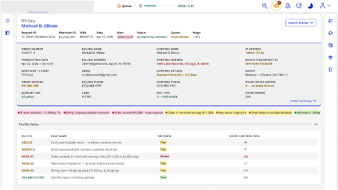

Case Study: Design Sprints · ServiceNow Workflow Design Studio · 2026
A team facing a complex business challenge and needing alignment was seeking help. Design sprint to the rescue!
1. CONTEXT
The competitive landscape in payment processing and risk management is getting more crowded, with increased pressure from startups and increased scrutiny from regulators. A Fortune 500 financial services and payment technology company needed to improve its fraud case management capabilities and end-user experience to solidify its position as the market leader. They had a plan to improve their fraud operations but needed a partner to handle the orchestration layer between their back-end systems and a new unified front end. They were evaluating multiple vendors.
2. SITUATION
ServiceNow needed to prove to the client's VP of Product and Risk that we could meet all their tenancy and security requirements as the orchestration layer, but that was table stakes. We also needed to demonstrate value that we could bring to the fraud analyst, issuer, merchant, and purchaser experiences. I needed to understand the underlying problems, align stakeholders around a shared vision, and partner with the architect and developer to create a compelling solution concept. The executive pitch was in 6 weeks, so we needed to move quickly and with precision.
3. APPROACH
I led a remote engagement planning session to align on the problem theory, timeline, and expectations for the engagement. By the end of the session, I had a plan for a design sprint that would culminate in a demonstration of how we would meet their needs. The plan included the standard phases of a design sprint, tailored to the needs of the engagement and the schedule constraints posed by the team's geography and schedule requirements.
- Discover - Conduct deep-dive interviews to learn more about the agreed-upon problem and its surrounding context. I created a set of AI skills to help us catalog and synthesize interview data throughout this phase.
- Define - Determine the salient themes and insights we learned in the interviews. With these as a foundation, I prepared the run-of-show, activities, and physical stimulus for the co-innovation session.
- Sketch + Decide - Gather the customer and ServiceNow teams in person to co-innovate around our insights. I facilitated a 2-day workshop among cross-functional leaders and doers so everyone felt heard and had a sense of ownership in the outcomes. We authored design challenge statements that encapsulated our shared goals, then created journeys and mockups that addressed the challenges. We wrapped up by prioritizing the concepts we wanted to bring to life in the solution.
- Prototype + Validate - Draw inspiration from the workshop to create a feasible solution on ServiceNow's architecture and solution ecosystem. I ensured my Architect and Developer had everything they needed, including the additional conversations and autonomy to let their talents shine through. Throughout the solution build, I led check-ins with my account team and the customer to ensure our work was directionally correct to increase confidence that our solution would land.
What we learned
- The customer's team grew through a series of acquisitions and therefore had non-integrated technical debt and distinct customer bases that had to be served by the new, unified solution.
- The customer's globally distributed teams were juggling 11+ legacy systems to work each case and had different measures of success.
- They had an average handling time KPI. Analysts spent the majority of that time on finding and navigating data, which led to them feeling rushed to make a judgment.
- Multiple teams worked in concert to ensure fraud was stopped at different stages in the journey. Each team acted in different systems, yet their work was interconnected in ways that weren't always transparent. The solution needed to leverage progressive disclosure to minimize noise, but enable visibility when necessary.
- Most fraud decisions can be automated, but when analysts are required, they need data from multiple sources in seconds. The system of the future needs to augment that data with AI-driven decision support that indicates urgency, priority, outliers, and defensible recommendations.
- Our demo couldn't just show features. It needed to visualize a holistic vision for a more efficient, integrated way a fraud case could flow between systems and people until resolution.

An example of a design sprint output can be a future state visualization
4. OUTCOMES
Following the executive demonstration, the customer's VP of Product and Risk concluded with, “We're all in.” The account team received a verbal commitment to move forward, validating both the solution vision and the accelerated discovery approach. It was also their first design sprint, and they committed to using the approach again in future engagements.
Highlights
50% faster
We were able to compress our typical sprint duration without cutting scope or sacrificing solution fidelity by leveraging AI.
Alignment achieved
Team members from different acquired companies and functional teams agreed we had the right problem identified and concepts selected to develop into a solution.
Commitment secured
The customer moved from evaluation to a purchasing commitment. Their decision-maker commented "We're all in" on the solution.
See the AI skills that powered these results in the AI Skills for Design Discovery case study.